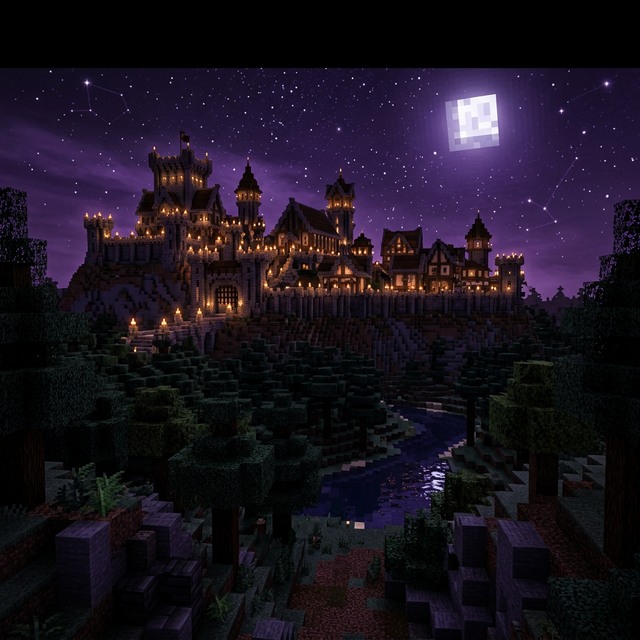

ArcaDe Craft
Bir dünya kur.
Bir köyün sırrını çöz.
Survival'da kendi hikâyeni yaz. Rob's Village'da arkadaşlarının gizli rollerini keşfet.
Java & Bedrock Birlikte, aynı dünyada.
ArcaDe Craft oyunları
Tüm oyunlar İki oyun. Bambaşka hikâyeler.

Kalıcı dünya · Kendi hızında
Survival
Evin, mesleğin, pazarın. Emek verdiğin bir dünyada yerini bul.
Dünyayı keşfet
Kurt köylü · Gizli roller
Rob's Village
Geceyi atlat, ipuçlarını birleştir. Peki kime güveneceksin?
Köye adım atİlk durağın oyun lobisi. Pusuladan oyununu seç, macerana katıl.
Nasıl katılırım?Survival'da hayatBir kulübeyle başlar.
Bir kulübeyle başlar.
Gerisi sana kalır.
İster bir çiftlik kur, ister ticarette adını duyur. Günlük hedefler ve meslekler yol boyunca sana eşlik eder.
Survival rehberleriBirlikte daha iyiOyunun dışında da
Oyunun dışında da
buluşalım.
Etkinlik duyuruları, yeni arkadaşlar ve ihtiyaç duyduğunda yardım. Topluluğun Discord'da.
Discord'a katılSurvival VIPBiraz daha alan.
Biraz daha alan.
Biraz daha sen.
Daha çok ev, kişisel depo ve günlük kullanım kolaylıkları. VIP, MVIP ve UVIP haklarını incele.
Paketleri karşılaştır VIP mağazası Para veya meslek kazancı çarpanı verilmez.